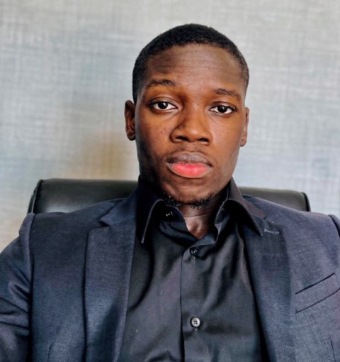

Hallo, mijn naam is Rene-iven Javinde. Ik ben een gemotiveerde student system & network engineering met een sterke interesse in IT-infrastructuur, netwerken en serverbeheer.
Voor meer info over mij kunt u gerust mijn portfolio doornemen.

-
ERVARINGEN
Hoger Onderwijs
System Network Engineering, UNASAT
HedenVoortgezet Onderwijs
VWO 4
2018 - 2023MULO
Salvatorschool
2014 - 2018Basisonderwijs
St. Petrusschool
2006 - 2014Sportieve Prestaties
2025Kampioen Interbankentoernooi
Hoogtepunt bij de DSB: Het behalen van de 1e plaats.
2024Debuut DSB
Start van mijn deelname aan het Interbankentoernooi.
2023De Arend & VWO 4
Overstap naar De Arend en een 2e plaats behaald met VWO 4.
2018Podiumplek CLD
3e plaats behaald in de competitie na jaren van inzet.
2014Start Basketbal
Begin van mijn passie bij CLD en mijn schoolteam.
CARRIÈRE
Werkervaring & Groei
Huidig / Vaste DienstDe Surinaamsche Bank (DSB)
Officieel in Vaste Dienst Februari 2026 - Heden
Na mezelf bewezen te hebben als flexwerker, heb ik de stap gemaakt naar een vaste aanstelling binnen de bankwereld.
De Surinaamsche Bank (DSB)
Flexwerker Oktober 2023 - Februari 2026
Verantwoordelijk voor diverse ondersteunende werkzaamheden, waarbij flexibiliteit en nauwkeurigheid centraal stonden.
Eerdere Vakantiebanen
2022 & 2023: De Surinaamsche Bank (Vakantiewerk - de basis voor mijn huidige loopbaan)
2021: Fernandes Noord (Vakantiewerk)
2018: Rudisa (Eerste vakantiebaan)
EIGENSCHAPPEN
BASKETBALLEN
ik basketbal sinds ik 12 jaar ben
LEERGIERIG
ik hou van nieuwe dingen leren en uitproberen
DISIPLINE
me ouders hebben me van jongsaf disipline geleerd
SOCIALIZEN
ik hou van praten
SCOOTERMONTEUR
ik had een brom gehad en kon experimenteren erop
FAST LEARING
ik kan dingen heel snel oppakken/leren
MIJN VISIE & DOELEN
Mijn focus voor de komende tijd is helder: ik bouw aan een sterke en stabiele toekomst. Mijn eerste prioriteit is het behalen van mijn HBO-diploma, wat de weg vrijmaakt voor mijn groei binnen De Surinaamsche Bank. Ik heb de ambitie om de overstap te maken naar de IT-afdeling, waar ik mijn passie voor netwerken en engineering professioneel wil inzetten. Daarnaast werk ik er hard aan om binnen drie jaar financieel slimmer en stabieler te worden, met als concreet doel om binnen vijf jaar mijn eigen perceel aan te schaffen. Door mijn technische projecten en mijn winnaarsmentaliteit uit de sport te combineren met deze zakelijke doelen, zet ik elke dag een stap dichter naar volledige zelfstandigheid en succes.
Neem hier contact op met me
Heb je een vraag of wil je samenwerken? Stuur gerust een bericht!